1.기본적인 아이템 탐색 개요
유저들이 플레이하게 될 무대인 루미아 섬의 각 지역에는 오브젝트, 자연물, 야생동물 등이 고루 분포되어 있습니다.
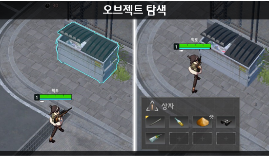
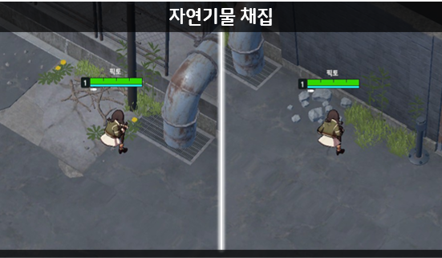
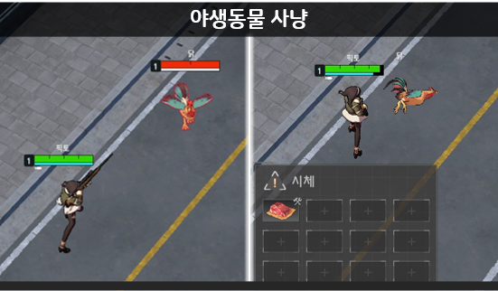
각각의 요소에서 다양한 아이템을 습득할수있습니다.
2.아이템 타입
아이템에는 다양한 타입과 사용 형태가 존재하며 크게 두가지로 분류 됩니다.
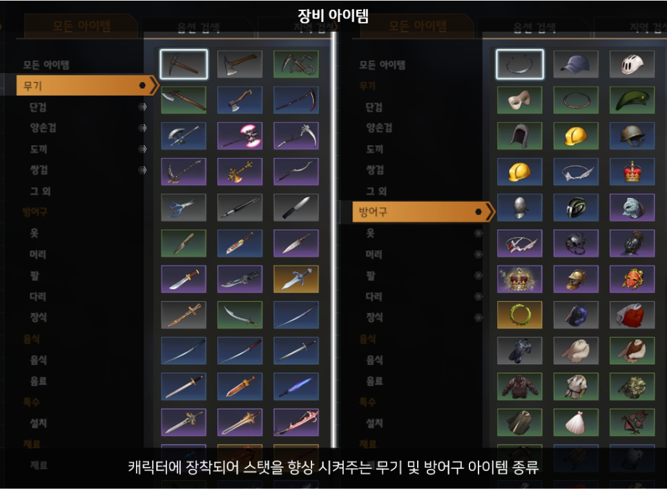
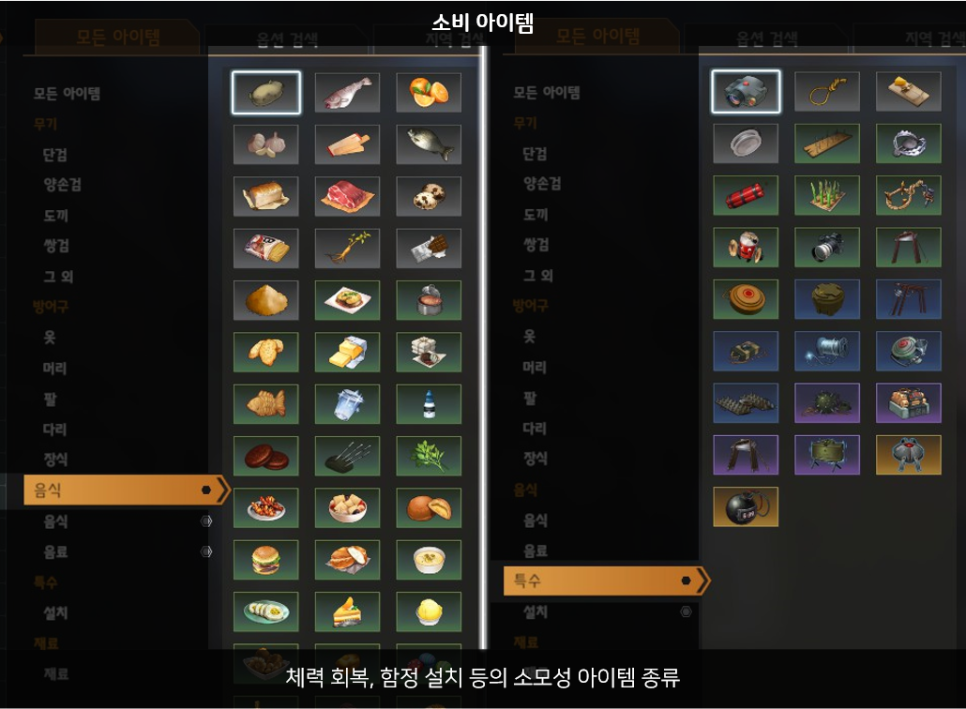
상기 항목 외에도 순수한 재료로써 사용되는 아이템들 또한 존재합니다.
3.아이템의 등장 지역
루미아 섬은 16개 지역으로 구분되며 연구소 지역을 제외한 15개 지역에서 총 91종의 일반 아이템이 등장합니다.
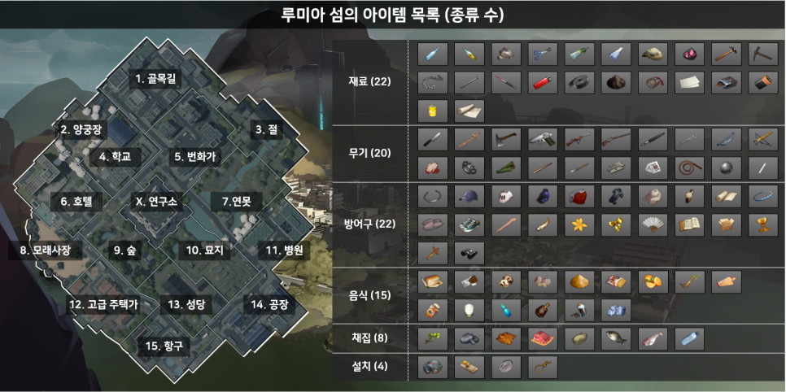
아이템이 여러 지역에 흩어져 있기 때문에
유저는 게임 시작부터 종료까지 핵심 아이템 제작을 위해 여러 지역을 탐색함과 동시에,
상대 유저로 부터 생존하기 위한 전투를 병행하며 게임을 진행하게 됩니다.
4.아이템의 조합
아이템 제작에는 다음과 같은 규칙이 있습니다.
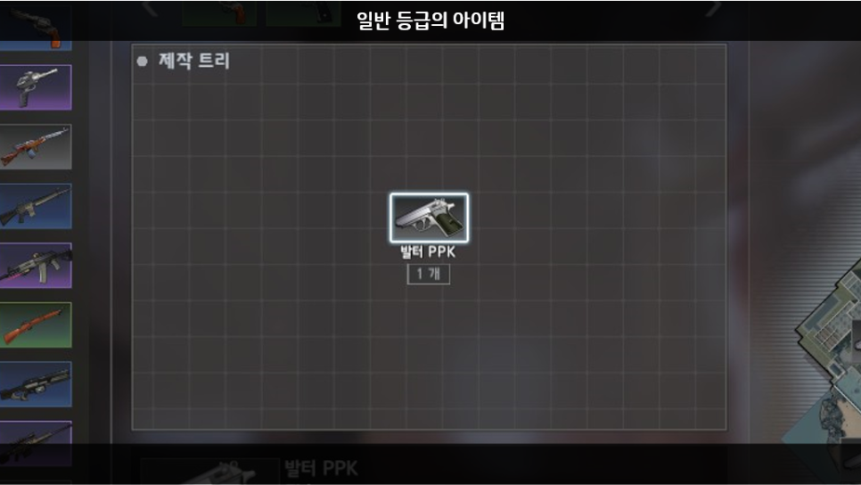
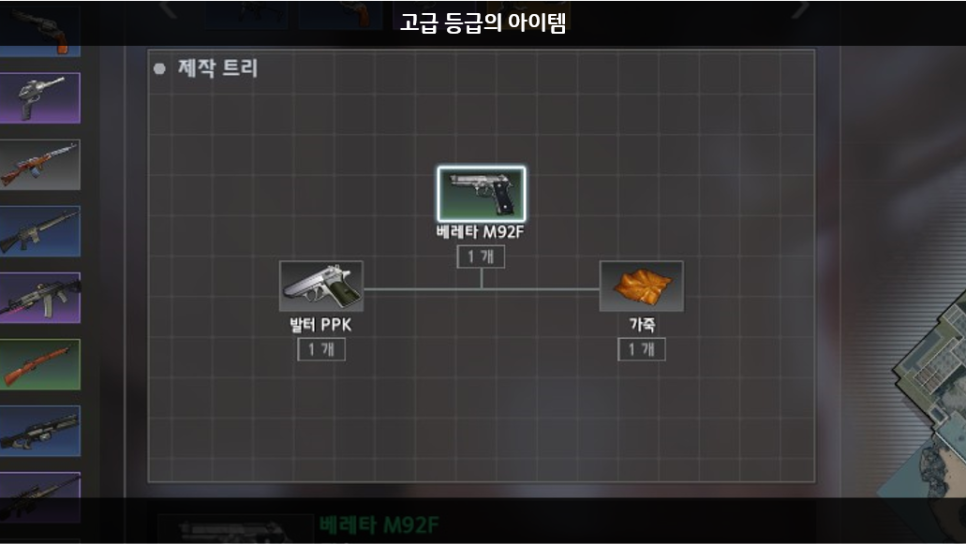
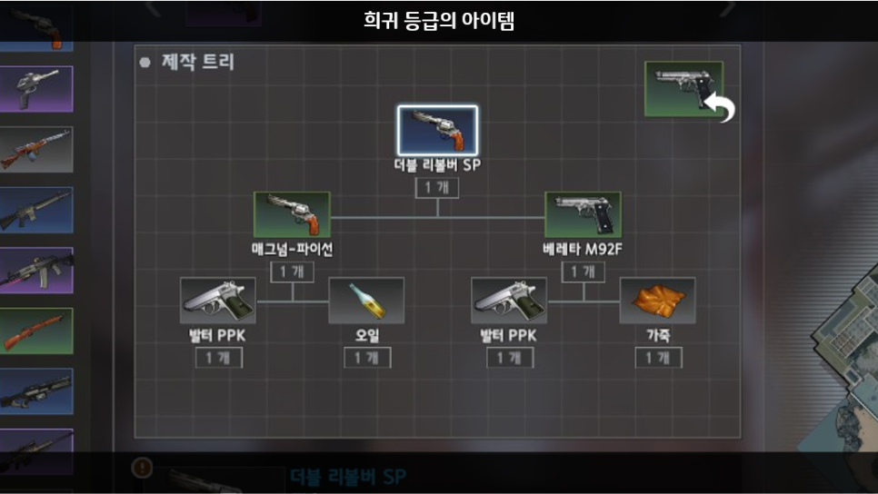
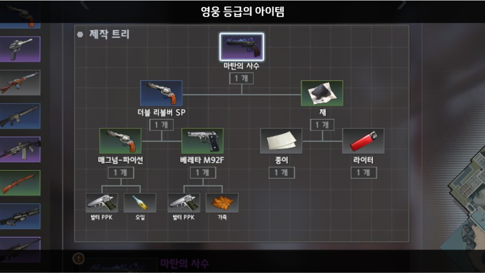
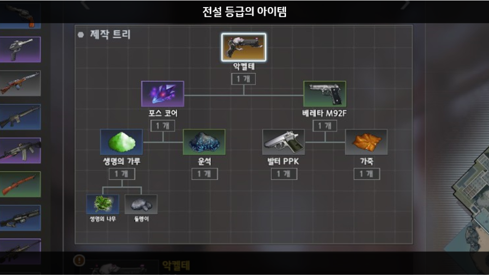
- 하나의 아이템을 제작할 때, 다른 종류의 아이템이 한 가지 씩, 총 두 개가 필요합니다.
- 제작에 사용된 아이템보다 등급이 같거나 높은 아이템이 만들어 집니다.
- 순수 재료가 아닌 장비 및 소비 아이템 또한 아이템 제작 재료로 사용될 수 있습니다.
5. 아이템 제작의 최종 목표
이러한 아이템 제작의 최종 목표는 다음과 같습니다.
1) 캐릭터에 장착시킬 장비 아이템 6종 제작 (무기1종, 각 방어구 부위 5종)
2) 전투에 필요한 소비 아이템 제작
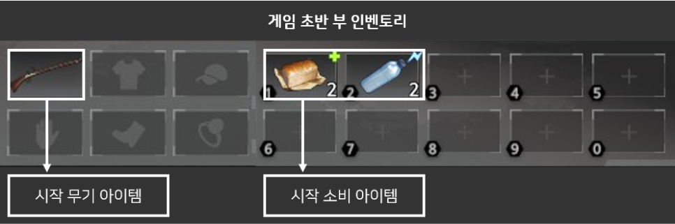
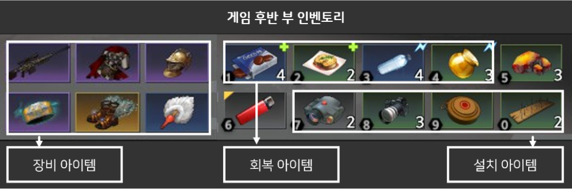
위와 같이 캐릭터를 강력하게 성장시키기 위해서는 아이템을 반드시 제작해야 합니다.
그러기 위해선, 아이템 만들기 위한 재료를 상대 유저보다 먼저 습득해야 하며
이를 위한 이동 루트를 잘 계획하는 것이 중요합니다.
다음 루트 설명 보러가기